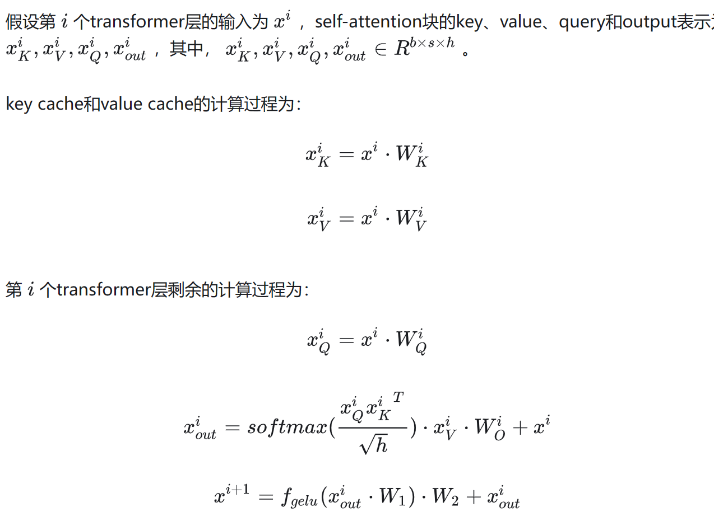

Transformer¶
模型结构¶
{kind=link}
- Embedding:
所谓嵌入层，就是一种将高维数据映射到低维空间的方法，常见的Word Embedding，将每个单词表示为一个固定长度的实数向量，表示的是一个单词在一个抽象空间中的位置。常见的word2vec模型就是一种实现...
通常有两种表示法：One hot representation和Distributed representation
- Positional Encoding:
\(Input = Input\_embedding + positional\_encoding\)，目的是为了将tokens的位置信息告诉模型，需要保证三点
- 可以用来表示一个token在序列中的绝对位置
- 在序列长度不同的情况下，不同序列中token的相对位置/距离也要保持一致
- 可以用来表示模型在训练过程中从来没有看到过的句子长度。
常用的采用sin+cos混合表示的方法：即\(PE_{t}=[sin(w_0t),cos(w_0t),...,sin(w_{\frac{d_{model}}{2}-1},cos(w_{\frac{d_{model}}{2}-1})]\)，以sin和cos函数对的形式来表示，便于位置向量能够通过线性变换来得到，即\(PE_{t+\Delta t}=T_{\Delta t}*PE_t\)
{kind=link}
Transformer中采用的PE有如下特点：\(w_k=\frac{1}{10000^{\frac{2k}{d_{model}}}}\)
- PE的点积取决于\(\Delta t\)，即点积的大小可以反应两个PE之间的距离。
-
另外就是PE的点积是无向的，即\(PE_t^T*PE_{t+\Delta t}=PE_t^T*PE_{t-\Delta t}\)
-
Add & Norm:
Add是residual block，数据在此进行reidual connection(残差连接)，Norm采用的是Layer Normalization方式。
Layer Normalization: 用于解决ICS问题，即第L+1层的输入会随着第L层参数的变动，而引起数据分布的变动，每层都不同导致训练变得困难。即将所有的输入限制为(0,1)分布并加上线性表示，线性表示的两个参数需要学习，LN是在整条数据间进行标准化操作，即纵向操作而不是横向操作（横向代表一个token的特征值，纵向代表该token和对应位置token的 𝛼值）。
\(h=f(g*(\dfrac{x-\mu}{\sigma})+b)\)，其中μ是平移参数 ，δ是缩放参数 ，b是再平移参数， g是再缩放参数，得到的数据符合均值为b，方差为g^2的均值分布，当b=0, g=1时就是(0, 1)分布
Reidual connection: 用于解决深度学习中网络过深准确率下降的问题，可以在网络深层建立一种类似的Identity Mapping，让模型不会忘记已经学习的东西。恒等映射：\(H(x)=F(x)+x\)
其中\(F(X)\)被称为residual function，模型通过学习在深层的时候使得\(F(X)\)逼近0，而这样的\(H(X)\)的构建方式称为残差连接，当\(x\)和\(F(x)\)不同维时，可以在\(X\)前加上一个转换矩阵\(W\)
{kind=link}
- Multi-Head Attention：
Self-Attention：对每个token生成三个向量q,k,v，具体计算过程中，一个token的query与其他token的key进行某种计算，得到attention score再乘上每个token的value，就得到了信息抽取完毕的四个向量，将四个向量相加，就是该Token经过attention层后的结果。(attention score矩阵的每一行表示一个token)
{kind=link}
由多个Self-Attention组成的Multi-Attention，可以捕获单词在多个维度上的相关系数。\(\(Attention(Q,K,V) = softmax(\frac{QK^T}{\sqrt(d_k)})\)\)，Muiti就是将它们拼到了一起，进行一个concat的操作
{kind=link}
{kind=link}
- Feed Forward：
即传统的FFN层，在transformer中是一个token-wise的升维-过激活-降回原来维度的MLP，由多个全连接层组成，层与层之间是前向传播的，MLP是一个FFN的具体实现，中间有多个隐藏层。
参数和计算量分析¶
参考：分析transformer模型的参数量、计算量、中间激活、KV cache - 知乎 (zhihu.com)
借用知乎上一篇讲的非常详细的文章，如今基于Transformer的LLM主要分为训练和推理两个过程。
- 推理和训练的区别：拿Transformer来说，分为Encoder和Decoder两个部分，Encoder部分在输入输出的时候没什么变化，本质都是对一个输入的数组进行时间序列重组，目的是把一个不定长且embedding后的输入，变换为一个定长的分布均匀的输出。Decoder在训练和推理时也是统一形式，只是训练时是在知道ground truth的情况下进行teach forcing，输入是完整的标注，通过使用mask让decoder看不到未来的信息。而在推理时，输入是上一时刻的输出
而在训练和推理的过程中，显存占用是不一样的。在训练的过程中，需要保存模型参数，前向传播中的中间激活，反向传播时的梯度和优化器状态，而在推理的过程中，仅用保存模型参数。
- 模型参数
假设transformer模型的层数为 \(l\) ，隐藏层维度为 ℎ ，注意力头数为 \(a\) 。词表大小为 \(V\) ，训练数据的批次大小为 \(b\) ，序列长度为 \(s\)。那么每层由一个MLP和一个Attention组成。
对于Attention来说：模型参数有权重矩阵\(W_Q,W_K,W_V\)，输出权重\(W_O\)和偏置\(b\)，前者形状为\([h,h]\)，后者形状为\([h]\)，所以参数量一共是\(4h^2+4h\)
对于MLP来说：模型参数主要是两个线性层\(W_1\in R^{h\times 4h},W_2\in R^{4h\times h}\), 加上两个偏置\(b_1 \in R^{4h},b_2 \in R^{h}\)，所以参数量一共是\(8h^2+5h\)
在Attention和MLP层之后，都有一个Layer norm操作，一般情况下其中有一个缩放参数\(\gamma \in R^h\)和平移参数\(\beta\in R^h\), 所以参数量为\(4h\)
所以一个Transformer层的参数是\(12h^2+13h\)
在Output转换为vocab时，会有一个词嵌入矩阵，参数量为\(Vh\)（词表大小乘以词向量维度=hidden_size），所以一个LLM的参数量是\(l(12h^2+13h)+Vh\)
以LLama7B为例，\(h=4096\), \(l=32\)，那么参数近似等于\(l(12h^2+13h)\approx 6.44B\)
- 梯度和优化器状态
在一次训练迭代过程中，一般采用混合精度加速，每个模型参数对应一个梯度和两个优化器状态(AdamW)。训练中，使用fp16的参数进行前向和后向传递，并进行梯度计算，而在优化器更新模型参数时，会使用fp32的优化器状态，梯度和模型参数来更新。所以一个模型参数需要\((2+2)+(4+4+4+4)=20\ bytes\)
- 中间激活值
中间激活值的显存占用与输入数据的大小(批次大小\(b\)和序列长度\(s\))成正相关，假设以fp16存储，dropout的mask矩阵以int8来存储。所谓中间激活就是前向传递过程中计算得到的，并在后向传递过程中需要用到的所有张量(一般包括各函数的输入和dropout的mask矩阵)。
Attention:
\(Q=xW_Q, K=xW_K, V=xW_V,x_{out}=softmax(\dfrac{QK^T}{\sqrt h})\cdot V\cdot W_o +x\)
-
\(QKV\)矩阵需要保存共同输入值\(x\)，形状是\([b,s,h]\)，所以占用\(2bsh\)
-
\(QK^T\)需要保存中间激活QK，形状是\([b,s,h]\)，所以占用\(4bsh\)
-
\(softmax\)函数需要输入\(QK^T\)，形状是\([b,a,s,s]\)，所以占用\(2bas^2\)
-
\(dropout\)需要保存mask矩阵，形状是\([b,a,s,s]\)，占用\(bas^2\)
- 计算attention时，需要保存输入score即\(softmax\)的结果，形状是\([b,a,s,s]\)，占用\(2bas^2\)，还有输入V\([b,s,h]\)
- 计算输出映射时，需要保存其输入\([b,a,s,\dfrac{h}{a}]\)，以及一个dropout操作的mask\([b,s,h]\)，总共占用\(3bsh\)
所以Attention的中间激活总共占用\(11bsh+5bas^2\)
MLP:
\(x=f_{gelu}(x_{out}W_1)W_2+x_{out}\)
-
线性层\(W_1\)和\(W_2\)：需要保存输入\([b,s,h]\)和\([b,s,4h]\)，占用\(10bsh\)
-
激活函数：需要保存输入\([b,s,4h]\)，占用\(8bsh\)
-
Dropout操作：保存mask\([b,s,h]\)，占用\(bsh\)
所以MLP的中间激活一共占用\(19bsh\)
Layer Normalization
该层的输入\([b,s,h]\)，MLP和Attention各一个，总共占用\(4bsh\)
所以对于一个LLM来说，中间激活总共占用\(l(34bsh+5bas^2)\)
- KV cache
KV cache使用主要分为Pre-fill和decode两部分
-
在预填充阶段，会根据输入的prompt，为每层生成key cache和value cache.

-
在解码阶段，计算分为更新KV cache和第i个transformer的输出。此时\(x^i_k\in R^{b\times(input+step)\times h}\), \(t^i_Q\in R^{b\times1\times h}\)
{kind=link}
{kind=link}
显存占用：对于KV cache来说，假设输入序列长度为\(s\)，输出序列长度为\(n\)，那么最高显存占用\(2\times 2 \times lb(s+n)h\)
- 计算量估计
参考：LLM KV cache详解 图示，显存，计算量分析，代码
总的来说，将Gemm的dense操作，转换为了Gemv操作，增加了Kv cache的缓存。
Attention
{kind=link}
MLP
{kind=link}
logits
output中当前位置的logits指的是，下一个预测token的概率分布（未进行softmax的概率分布）
{kind=link}